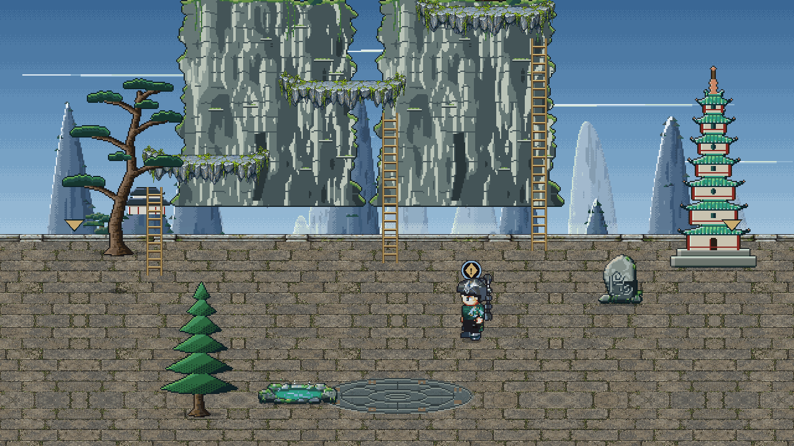
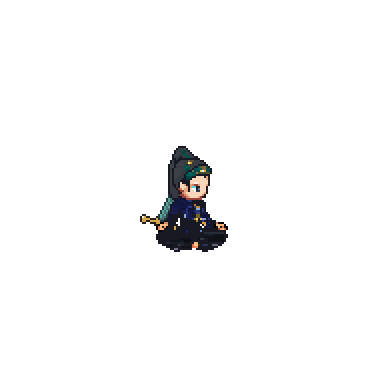

Cultivation
Overview
Foundation
Body
Heart
Paths
Methods
Dao
Seclusion
Mortal ✓
Bone Forging ✓
Qi Kindling ✓
Qi Unfurling ✓
Heart Tempering
Cloud Stride · Flight, Mounts
Spirit Awakening
Heaven Glimpse
Sage
Sage Sovereign
Will Manifest
Sphere Lord
Law Touching
Monarch
Half-Heaven Monarch
Dao Sigil
Heaven's Threshold
Inner Heaven
World Genesis
Heart Tempering
Great realm 5 of 19 · nine steps
1
2
3
4
5
6
7
8
9

Cloud Stride
Early 1–3
Middle 4–6
Late
Peak
31
Heart Tempering 4
MiddleLv 31 · accumulating
Jade Current Scripture · Primal Qi · stability settling
Stored Qi 0 · banks here once the bar is full
Next: Heart Tempering 5
A minor step: fill the bar, then break through.
The gate to Cloud Stride, at step 9
Pass the Heart Trial · opens at step 9
Qi Refining Pill ×1 · none held
A method past step 9 · Jade Current ends there
Meditate
Break Through